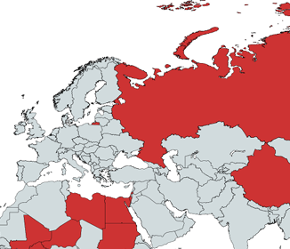

Ritornando al conflitto, è da oltre un anno che la guerra imperialista in Palestina ha ridotto la Striscia di Gaza in un cumulo di polvere e macerie, lasciando indietro un tremendo bilancio di morti e feriti. Sarebbe però un errore considerare questo conflitto soltanto come una lotta tra ebrei e arabi o pensare che lo scontro tra Israele e Hamas sia un anello della solita catena di guerre tra due nazionalismi. Innanzitutto, l’escalation degli avvenimenti va collocata in uno scenario internazionale in cui lo stato economico del capitalismo mondiale è sull’orlo del collasso; a riprova di ciò vediamo come la stragrande maggioranza dei paesi occidentali, come USA, Giappone ed Europa, viva sul debito. Dietro l'intero conflitto c'è la lunga mano dell'imperialismo da entrambe le parti. Iniziando proprio da Israele, che deve la propria esistenza all’unione di interessi economici favorevoli. Al termine del secondo conflitto imperialista, le grandi potenze si affrettarono a stringere alleanze e costruire basi proprie all’interno della regione con la più grande disponibilità di petrolio al mondo – il Medio Oriente. Gli Stati Uniti d’America furono i primi a riconoscere la piena legittimità dello Stato d’Israele. Quest’ultimo, durante la Guerra Fredda, divenne roccaforte dell’Occidente, in particolare degli USA, che fino ad oggi continuano la loro enorme campagna di finanziamenti a Israele, con circa 10 milioni di dollari al giorno di aiuti militari e somme “extra” per il finanziamento di alcuni programmi, tra cui la costruzione delle sue difese missilistiche (Iron Dome, ecc.), che hanno reso Israele una delle più grandi potenze regionali. In sintesi, dal 1946 fino ad oggi, sono stati stanziati dagli USA in Israele più di 320 miliardi di dollari.
La questione Israelo-palestinese
Introduzione
“I lavoratori non hanno patria. Non si può sottrarre loro ciò che non hanno.” Questa frase, nell’attuale teatro di guerra, scritta da Karl Marx precisamente 100 anni prima della fondazione dello Stato d’Israele, è da considerare più che contemporanea alla luce delle varie proposte dei diversi settori politici della borghesia mondiale, dai più radicali ai più reazionari. Queste proposte si limitano alla risoluzione della questione palestinese solo attraverso la formazione di uno o due stati. È necessario però fare un passo indietro fino al 7 ottobre 2023, quando Hamas sferrò un attacco improvviso allo Stato d’Israele, provocando in poche ore più di 1000 vittime con violenze di ogni genere. In questo attacco a “sorpresa” (tra virgolette perché l’informativa ufficiale dei servizi egiziani e i giornali statunitensi confermano che Netanyahu fosse già da tempo a conoscenza di un possibile attacco da parte di Hamas) gli obiettivi di carattere nazionale e internazionale sono strettamente intrecciati: rimuovere definitivamente l’Autorità Nazionale Palestinese, un organismo ormai colluso da tempo con lo Stato d’Israele, guadagnando così il ruolo di leadership nel conflitto; mettere in crisi il Patto di Abramo del 2020, che vedeva negoziati in corso tra Israele e l'Arabia Saudita, a cui partecipava anche l'Autorità Nazionale Palestinese. Dopo il Patto di Abramo tra paesi sunniti e Israele, Hamas si è sentita isolata. Più in generale, l'obiettivo di Hamas è quello di coinvolgere gli stati arabi in una sorta di santa alleanza contro Israele, contrapponendo un fronte arabo (Egitto, Siria e Libano) al Patto di Abramo tra Israele e alcuni paesi arabi (Emirati e Bahrain), tra cui l'Arabia Saudita.
Le barbarie dell’imperialismo sono visibili a occhio nudo e nel modo più meschino e animalesco, sia al di fuori che all’interno dello Stato. La borghesia nazionale israeliana, da 70 anni, applica una sistematica violenza e repressione sul proletariato palestinese, anche quando è cittadino d’Israele. Esso è sfruttato e oppresso nelle forme più brutali, venendo discriminato nell’accesso all’alloggio e nei luoghi di lavoro; vengono considerati cittadini di seconda classe a cui non è stato nemmeno permesso vaccinarsi durante la pandemia del Covid. In particolare, negli ultimi anni, precisamente dal 2018, sono stati aumentati gli affitti per tutti i cittadini palestinesi residenti nei quartieri poveri. Ad esempio, a Gerusalemme – anche con la spinta degli USA – il governo di Israele ha in tutti i modi cercato di sfrattare, nei modi più feroci, tutte le famiglie palestinesi residenti a Gerusalemme Est. Maltrattati, derubati e attaccati dai nuovi occupanti, le loro case sono state spruzzate con putrida acqua tossica. Coloro che tentarono di protestare subirono la brutale violenza delle forze dell’ordine o, nel migliore dei casi, furono costretti a combattere contro lo sfratto in tribunale. Ma anche in Israele esiste una classe lavoratrice israeliana, la quale è vittima dello sfruttamento salariale e dell’intossicazione nazionalista e guerrafondaia a cui è esposta, data la guerra in corso. Nonostante questo, sarebbe anche un errore concludere, come fanno in tanti della cosiddetta “sinistra”, che il conflitto in Israele/Palestina è imperialista solo da una parte. Le macchinazioni dell’imperialismo non si manifestano solo ed esclusivamente all’interno dello Stato d’Israele, il quale rappresenta uno dei tanti pezzi del puzzle.

Un primo esempio d’interdipendenza nell’asse antipode all’imperialismo d’Occidente, Russia-Cina-Iran, riguarda l’arsenale bellico fornito dall’Iran ad Hamas, ovviamente non a titolo gratuito viste le garanzie mantenute dagli accordi tra la Cina e gli Ayatollah. L’accordo economico tra Pechino e Teheran, stretto nel 2021, prevede 400 miliardi di dollari di investimenti in energia e infrastrutture iraniane. Teheran, a sua volta, garantirà alla Cina il permanente approvvigionamento di gas e petrolio a prezzi competitivi. Nei termini dell’accordo è inclusa anche una cooperazione bellica attraverso l’introduzione di armi, missili e droni nel territorio iraniano, che secondo Israele pare siano in parte il materiale bellico fornito ai leader di Hamas. Per quanto riguarda la Russia, allo scoppio della guerra in Ucraina e a causa delle molteplici sanzioni ed embarghi imposti dall’UE, è stata costretta a chiudere tutti gli scambi economici del gas e delle risorse energetiche con la maggior parte dei clienti europei.
Questo ha indotto la Russia ad avvicinarsi sempre di più alle politiche cinesi e iraniane e a trovare nuovi clienti soprattutto in India, Nord Africa e Centro Africa. Vediamo come l’Iran, in questo momento, si riveli sempre di più “l’amico nel momento del bisogno”. Le due potenze, infatti, pochi mesi fa, hanno siglato un ulteriore patto strategico che prevede, oltre a una maggiore stabilità e intesa tra le due nazioni, la realizzazione di un gasdotto dalla Russia all’Iran e un corridoio di trasporti intercontinentale che collega il porto di San Pietroburgo al porto di Mumbai. Tutte queste considerazioni mettono in chiaro che le classi sfruttate di Palestina e Israele sono solo alla fine della catena alimentare predatoria dell'imperialismo. Possono illudersi che il conflitto riguardi “il diritto all'autodeterminazione”, ma la dura realtà è che sono pedine in un gioco più grande.
Le formazioni politico-sindacali che dicono di essere dalla parte della classe lavoratrice, contro il capitale e il suo Stato, mostrano la loro vera natura di forze impastate di opportunismo antiproletario e la loro autentica essenza borghese, appoggiando uno degli schieramenti imperialisti in conflitto in nome di presunti diritti all'autodeterminazione dei popoli. Non riescono a comprendere che ogni eventuale formazione di un nuovo Stato sarebbe solo un'altra gabbia per il proletariato, un proletariato sfruttato, ferito e ucciso “al minuto” sul posto di lavoro in tempo di pace, e ancor più sfruttato e ucciso in massa in tempo di guerra. In questo contesto, ha ancora più valore l'indicazione fondamentale dell'unità di classe di tutti i settori del proletariato contro la borghesia, “democratica” o reazionaria, laica o religiosa, contro i suoi Stati, i suoi schieramenti imperialisti e contro i falsi amici. In primo luogo sindacati e partiti di “sinistra”, che ingabbiano le lotte operaie dentro le compatibilità del capitalismo, fino a soffocarle. Sotto il capitalismo, non esiste alcuna possibilità di risoluzione del conflitto israelo-palestinese.

Ma un’alternativa esiste, ed è l’unica speranza non solo per la classe sfruttata ma per l’intera umanità, sempre più prossima a un terzo conflitto mondiale. L’unica alternativa per il superamento di questa società fondata sullo sfruttamento e la morte è la costituzione di una società in cui gli Stati, il lavoro salariato, la proprietà privata, il denaro e la produzione per il profitto siano soppressi e sostituiti da un mondo basato sui bisogni umani e non sulle esigenze del capitale.